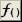
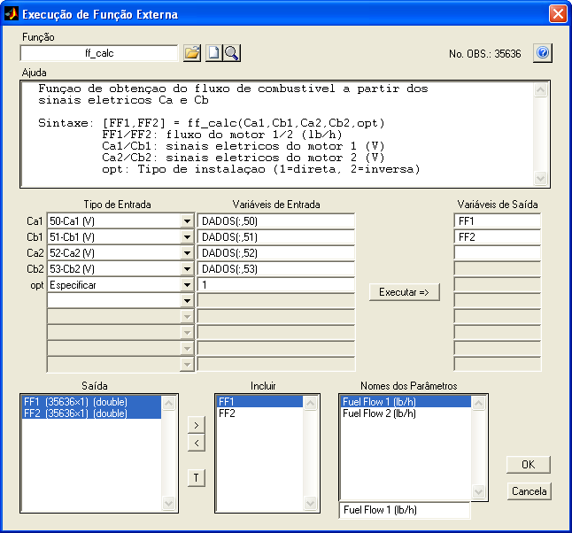

| Menu
Funções |
|
Função
Externa
Essa
operação
permite executar qualquer função externa ao R_DAT, sendo possível
fornecer dados de entrada a partir das matrizes de trabalho e
acrescentar os dados de saída da função às matrizes de trabalho.

na Barra de Ferramentas.Será apresentada a janela abaixo:

Descrição e
Operação
A janela é estruturada de forma que o usuário siga a sequência natural de operação, descrita a seguir. A figura acima ilustra um exemplo completo.
Definição da função e das variáveis
● No campo “Função”, indique o nome da função externa que deseja executar (sem a extensão). São suportados os formatos usuais do MATLAB: .m, .mex e .dll. Não são suportados scripts. O arquivo da função deve estar na lista de caminhos do MATLAB (path) para ser encontrado.
Caso deseje, use o botão para localizar a função desejada e, caso necessário, acrescentar seu caminho temporariamente à lista de caminhos do MATLAB.
Ao indicar ou selecionar uma função, sua ajuda (help) será apresentada no campo "Ajuda", para facilitar a interface de dados de entrada e saída. Além disso, o texto à esquerda dos campos "Tipo de Entrada" e os campos "Variáveis de Saída" indicarão automaticamente os nomes das variáveis definidas no escopo do arquivo .m.
● No campo "Tipo de Entrada", indique como são as variáveis de entrada necessárias à operação. As variáveis propriamente ditas são apresentadas no campo "Variáveis de Entradas". As opções são:
- Ignorar (espaço em branco): A entrada não é considerada;
- Especificar: A entrada é indicada diretamente pelo usuário como uma expressão no campo "Entrada", usando a sintaxe padrão do MATLAB.
Exemplos:
- Número: 1.4
- Matriz: [1, 2; 4, 3]
- Texto: 'norm'
- Bloco de dados: DADOS(:,2:6)
- Vetor: 0:2:20
- Expressão: sin(pi/4)
- Vazio: []
- Nome do parâmetro: Será criada no campo "Entrada" a expressão correspondente ao parâmetro indicado. A entrada será um vetor contendo todo o parâmetro.
Exemplos:
- DADOS(:,1)
- DADOS(:,25)
Para limpar
todas as variáveis de entrada, clique no botão  .
.
 .
.
● No campo "Variáveis de Saída", indique as variáveis de saída em formato válido como variáveis do MATLAB (texto contendo apenas letras sem acentos, números e sublinhado, começando por letra).
É possível definir até dez variáveis de saída, que devem ser preenchidas sequencialmente. Não é necessário atribuir todas as variáveis de saída previstas na função.
Execução da função
Depois de selecionar a função e as variáveis de entrada e saída, clique no botão para que o R_DAT execute a função com as entradas indicadas e atribua os resultados às variáveis de saída.
Caso ocorra algum problema na execução da função, o R_DAT informará ao usuário.
Caso a execução seja realizada com sucesso, as variáveis de saída serão
atribuídas e listadas no campo "Saída", juntamente com o tamanho e
classe.
Inclusão dos dados desejados
Para incluir uma ou mais variáveis de saída às matrizes de trabalho, selecione-as no campo "Saída" e clique no botão . As variáveis incluídas são apresentadas no campo "Incluir".
Apenas as variáveis compatíveis com a matriz DADOS podem ser incluídas,
ou seja, devem possuir o mesmo número de observações (linhas)
apresentado no canto superior direito da janela. É possível incluir
variáveis com múltiplas colunas, para as quais serão criados múltiplos
parâmetros.
Para excluir uma ou mais variáveis, selecione-as no campo "Incluir" e clique no botão .
Para transpor uma ou mais variáveis, selecione-as no campo "Saída" e clique no botão .
Essa operação pode ser necessária caso uma variável de saída seja do
tipo linha, pois as variáveis devem ser do tipo coluna para inclusão na
matriz de dados.
Renomeação dos parâmetros
Após inserir as variáveis desejadas, serão criados nomes de parâmetros
no campo "Nomes dos Parâmetros". Para variáveis com apenas uma coluna,
o nome de parâmetro será o próprio nome da variável. Para variáveis com
mais de uma coluna, serão criados vários nomes de parâmetros a partir
do nome da variável acrescido de uma numeração sequencial. Esses nomes
podem ser alterados livremente pelo usuário (desde que não sejam
vazios), no campo logo abaixo da lista de parâmetros.
Sair
Após definir
todos os parâmetros e pressionar “OK”, os novos
parâmetros serão acrescentados às matrizes de trabalho,
antes do
parâmetro “No.OBS.”.
Para cancelar a operação, clique no botão "Cancela" e confirme.
 |
Ajuste
de curva |
Menu Funções |
 |